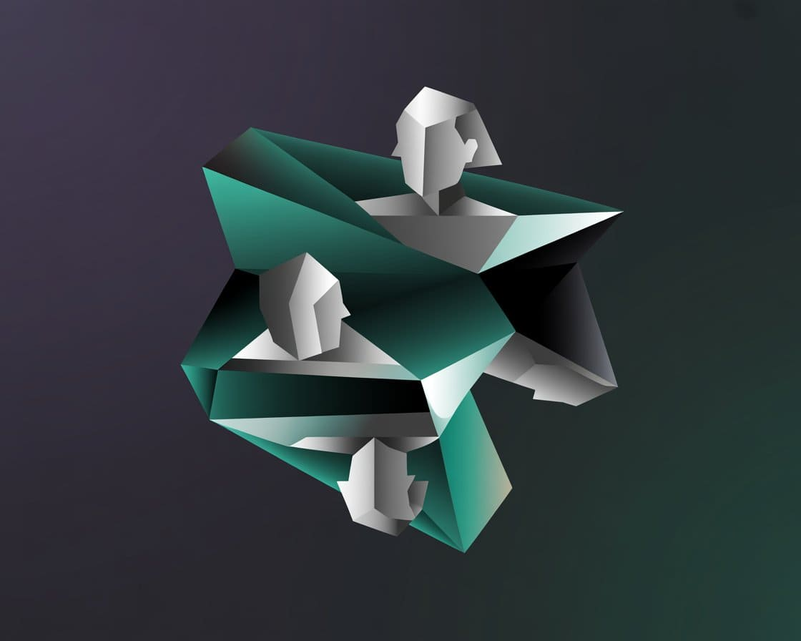

Panorama
Si bien estamos en la transición de la Cuarta Revolución Industrial que nace desde los 2000, caracterizada por el auge de Inteligencia artificial (IA), Internet de las cosas (IoT), la cadena de bloques (blockchain), impresión 3D, biotecnología, etc. hacia la Quinta Revolución Industrial, caracterizada por la colaboración entre humanos y máquinas inteligentes, priorizando la sostenibilidad, la personalización masiva y un enfoque más ético y humano de la tecnología nace en America Latina el concepto de la economía naranja.
También conocida como economía o industria creativa, artística, cultural: La economía naranja es un modelo productivo en el que los bienes y servicios que se comercializan tienen un valor intelectual, debido a que surgen de las ideas y del conocimiento de sus creadores. Explicado de otra forma, son todas las actividades económicas relacionadas con el arte, la cultura, investigación, ciencia, tecnología, entre otras, en las que la creatividad es la principal característica. Por ello, también es conocida como economía creativa.
Aunque el nombre de economía naranja surgió en un principio por la asociación que tradicionalmente ha existido entre el color naranja y la creatividad, y su enfoque era, principalmente, hacia la industria cultural y artística, con el paso del tiempo y debido, en parte, a la influencia cada vez mayor de la tecnología, se empezaron a introducir nuevos sectores, como las telecomunicaciones, robótica, programación, creación de contenidos, entre muchos otros. Eso sí, el principal requisito sigue siendo que se trate de ideas capaces de transformarse en bienes o servicios.
Datos culturales de Argentina
Secretaría de Cultura
"Impulsamos políticas públicas para el desarrollo de una cultura nacional que fomente la creación y las expresiones culturales, teniendo a la pluralidad como eje."
SInCA
"El Sistema de Información Cultural de la Argentina es un programa dependiente de la Dirección de Planificación y Seguimiento de Gestión de la Unidad de Gabinete de Asesores del Ministerio de Cultura de la Nación, que produce, sistematiza y difunde información referida a la actividad cultural."
Depende de la Secretaría de Cultura del Ministerio de Capital Humano (exMinisterio de Cultura de la Nación.
Arte Contemporáneo Multimedia
Los siguientes sitios permiten el descubrimiento de artistas y diseñadores multimediales, como así también de colectivos y espacios de experimentación, la promoción y difusión de convocatorias a eventos, becas, premios, residencias, etc del arte y diseño multimediales dentro del campo del arte contemporáneo.
VADB
"VADB es una iniciativa colaborativa especializada en Arte Contemporáneo Latinoamericano, que reúne y vincula información sobre obras, personas, organizaciones, eventos y publicaciones. VADB está basado en un modelo de relaciones de contenidos que organiza tanto prácticas institucionales y no-institucionales basándonos en los conceptos de Escenas Locales."
Arte Informado
"Fundado en 2001, Arteinformado (AI) es un medio digital sin fines de lucro dirigido a profesionales e interesades en el arte que reúne la información más relevante sobre los sistemas del arte en España, Portugal y Latinoamérica y sus conexiones globales."
Hipermédula
"Hipermedula.org es una plataforma digital de comunicación cultural y artística que se desarrolla como espacio de integración de la producción cultural, e interacción con los diferentes actores, creadores y público de la cultura iberoamericana."
Arte Online
"Arte Online es la primera plataforma de difusión en Internet focalizada en las artes plásticas argentina contemporánea que reúne el contenido editorial de los 10 últimos años del escenario artístico en nuestro país."
Revista Acromática
"Acromática es una revista imprescindible para estar al día de todo lo que sucede o va a suceder en el mundo del Arte; amplia agenda cultural, reportajes, críticas, eventos y mucho más…"
Revista Magenta
"Recorrido por las exposiciones de arte, ferias y bienales en Argentina y en el exterior."

Periodismo, Análisis y Crítica Cultural
El periodismo artístico, la crítica especializada y el análisis de obras/productos multimediales desempeñan un papel fundamental en las artes y el diseño multimediales. A través de la investigación, la opinión y la reseña, estos medios permiten comprender mejor el impacto cultural, técnico y creativo de diversas producciones. Desde los videojuegos hasta series, películas, etc.
Malditos Nerds
"Somos gamers, fanáticos de los videojuegos y la cultura pop y de compartir la experiencia."
Only Games
"Todas las novedades del mundo de los videojuegos y la tecnología. Noticias, videos, reviews y todo."
Extra Gamer
"ExtraGamers.com.ar es una web especializada en la industria de los videojuegos. Somos un equipo de periodistas que, por encima de todas las cosas, les gusta disfrutar con los juegos."
Revista REPLAY
"la revista de la generación de 8 y 16 bits. Retrogaming para retrogamers."
Press Over
"Periodismo de videojuegos. Reviews, investigación, noticias, opinión, entrevistas, podcast."
Cultura Geek
"Cultura Geek es un multimedio argentino, creado por el periodista Augusto Finocchiaro Preci, que comenzó como un programa de radio y luego se expandió también a un sitio de noticias que agrupa todas las novedades de tecnología, videojuegos, cine, series y esports."
Cultureando Pop
"Series, pelis, música y juegos. Todas las novedades sobre el mundo de la Cultura Pop."